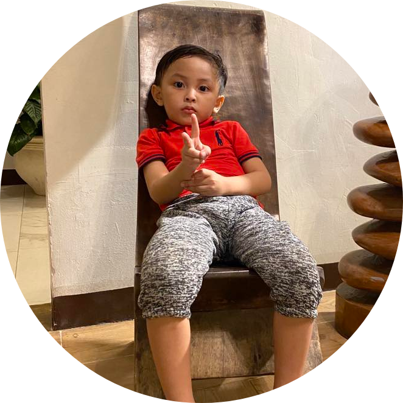
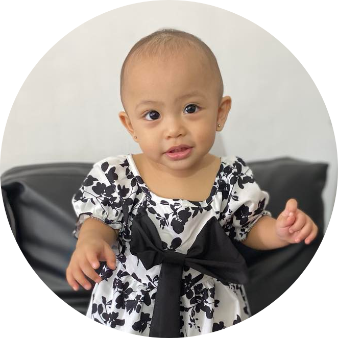

Family is the foundation of our lives, the source of our deepest connections and the wellspring of love and support. In the embrace of family, love intertwines with strength and creating a sanctuary of belongingness. They inspire us to treasure the moments we share, for together we weather life's storms. Within the harbor of family, bonds form, anchoring us to a sense of endless connection. They stand as pillars of guidance and support, nurturing our growth and offering unconditional acceptance. In their presence, we find a haven where stories unfold, and hearts find solace. Rooted in shared values, we overcome challenges hand in hand, forging a path illuminated by love and resilience.
My wife, Rolyn Ann Vivares, is not only my beloved partner but also the embodiment of a truly beautiful soul. Her inner radiance shines brightly through her loving and caring nature, while her unwavering faith in God serves as a constant inspiration in my life. As a mother to our children, her love and dedication are unparalleled, and I find myself constantly amazed by her thoughtfulness and selflessness. Even during moments when she may not feel her best, she effortlessly goes above and beyond, gracefully juggling numerous responsibilities. From preparing delectable meals to tending to household chores and meticulously caring for our laundry, her commitment to creating a happy and harmonious home is truly remarkable. She is an absolute blessing, and I am forever grateful to have her by my side. With her, I feel complete in every aspect, and I treasure each and every moment spent together. Thank you for being the incredible woman that you are, my love. My affection for you knows no bounds.
Johanne Velvety
Kent Thomas

Kent Thomas is the second child and the only son in the family,
born on November 30, 2018. His arrival completed the couple’s world.
Being regarded as God's answered prayer. He received equal love and
attention, just like his older sister. We, as parents, made sure to
provide everything that brought him joy and happiness.
Jehann Vienna

Jehann Vienna, the youngest and final child of the family, entered
the world on May 7, 2022. Her arrival was seen as an extra blessing for
the family, much like her older brother's presence. As she continues to
grow, she demonstrates remarkable progress every day.